Everything the coach shows on the board, by colour. What appears depends on your coaching level.
Your pieces: under the mouse, a piece that can move turns blue — click it to pick it up, and it turns green. Then the box follows the mouse to show where it can go.
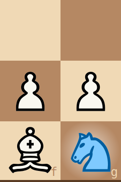
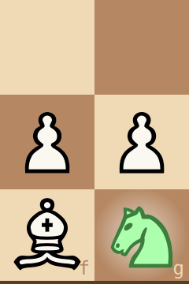
Left: the mouse on the g1 knight. Right: the knight picked up.
The box — the move you're pointing at, while a piece is picked up.
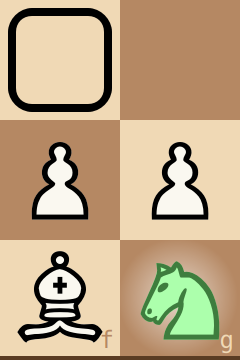
With colour-blind marks (Settings) the colours also get ▲ ● ▼ on the box's sides: best, playable, a mistake.
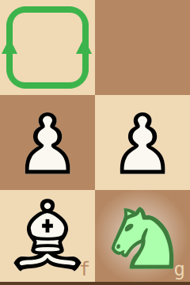
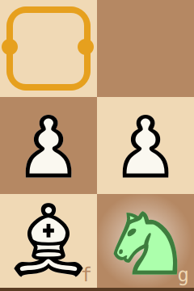
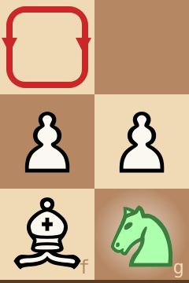
A small open book on the box's edge: a book move, one that strong players often choose here. The colour stays the coach's verdict, so an amber box with a book means "popular, but it costs something". In opening practice, a hollow book marks a book move that leaves the opening you're practising.
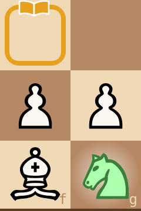
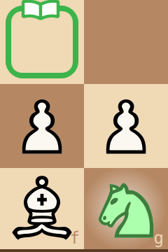
The last move: a soft glow on the square a piece arrived on, a paler spot where it came from. Check: a red glow behind the king in check.
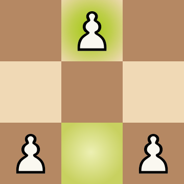
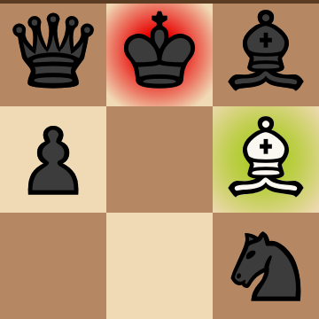
Left: White has just played e2–e4. Right: the bishop has just taken on f7, and the black king is in check.
The hint (H): magenta — the piece first, then (H again) a magenta box on its target.
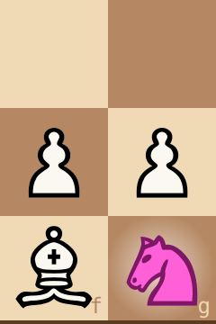
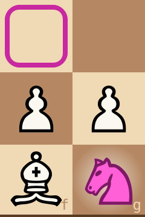
Left: the first H, the piece to move. Right: the second H, where it goes.
A red "!" in a square's corner: your piece there is hanging (attacked and not properly defended). Once the coach has looked and finds no real threat, the "!" goes: taking the piece wouldn't pay the opponent right now. The opponent's hanging pieces are never marked; you have to find them, or ask (linger on them). The threat (T): the opponent's piece and the square it would strike, flashed in red.
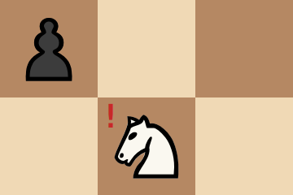
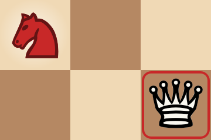
Left: your knight on e5 is attacked by the d6 pawn and not defended. Right: the threat — the knight would take your queen.
Violet: you tried a move that isn't legal (only with guidance off).
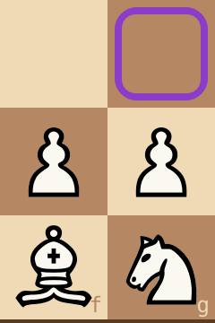
The knight can't go to g3: the square turns violet.
At the end of a game the mated king turns deep red, or both kings grey for a draw, and a banner across the board says what happened. Click the board to put it away.
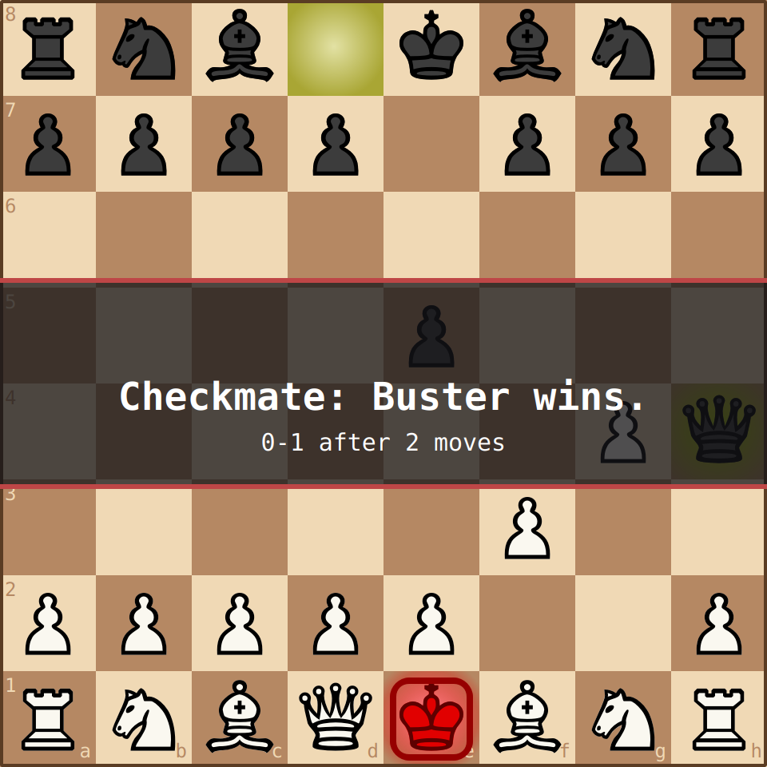
White is mated: the red king on e1, and the banner with the result and the game's length.
The eval bar (left of the board) is your chance of winning as the coach sees it: blue from the bottom is yours, grey from the top is the opponent's, and the black line across the middle is equal. The number at the blue's edge is your chance in percent ("M3": a mate in three). With a piece picked up, a coloured frame shows your chance if you play the move under the box: green means you keep it, red means it drops. At the end of the game it shows WON, LOST or DRAW.
Left: a 62 % chance. Middle: a piece picked up, the box on a move that keeps the 62 % (green frame). Right: a move that would drop it to about 40 % (red frame, down to where your chance would be).
The graph under the move list shows your winning chance after every move of the game: blue above the middle line (better for you), grey below it. A red dot marks each mistake of yours, and the amber line marks the move the board is showing. Click a point to see that position.
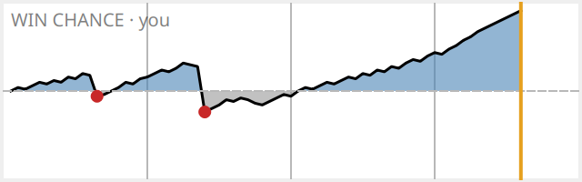
A game with two mistakes: the first cost a little, the second turned a good position into a worse one, and then the game turned your way.
The coloured dot in the status bar (bottom left) shows how settled the coach's verdicts are: yellow while they're still changing, deep green once the coach has looked deeply enough that they no longer change. The box colours are most reliable at deep green.
Left: still thinking. Right: settled.